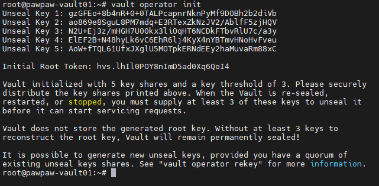
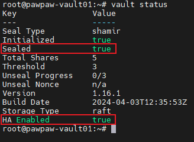
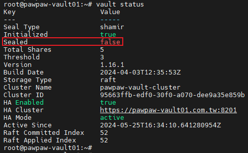
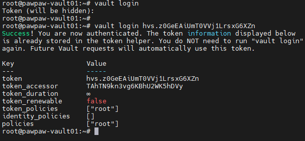
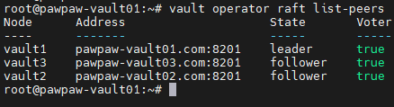
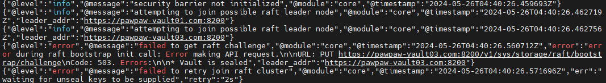

本篇文章會紀錄如何安裝 Vault Server Cluster.
至於 Vault 是什麼呢!?
簡單說就是一個可以協助管理機密資料進行驗證的平台, 為所有的 secret 資料進行統一的管理存放, 也能整合多項 3 party 的登入驗證, 以下請查看官網解釋.
HashiCorp Vault is an identity-based secrets and encryption management system. It provides encryption services that are gated by authentication and authorization methods to ensure secure, auditable and restricted access to secrets. It is used to secure, store and protect secrets and other sensitive data using a UI, CLI, or HTTP API.
快速解釋就是
HashiCorp Vault 是一個管理和保護秘密及敏感資料的系統. 它透過身份驗證和授權方法提供加密服務, 確保資料的安全性和可審計性. 使用者可以透過使用者介面 (UI), 命令列介面 (CLI) 或 HTTP API 存取和管理這些資料.
Reference
官方文件：Documentation
二近制檔案：Release binary
HA Cluster Build：Installation of HashiCorp Vault in HA mode with integrated storage
Install
因為多數時候, 建置的網路環境是無法連線到外網的, 因此在這邊直接下載 binary 來進行建置.
Vault 1.16.1
這次選用 vault_1.16.1 community 版本來安裝.
點選之後, 裡面還有一層關於1.16.1os版本的細分, 因為我是用 ubuntu, 所以就直接選 vault_1.16.1_linux_arm64.zip.
至於要在外解壓縮還是虛擬機中解壓縮, 無所謂, 因為我們只需要 binary.
這邊稍微提一下, 在選 binary 的時候, 會看到有些後面帶有一些 suffix, 這邊就我所知簡單解釋(有錯在麻煩大大指證, 並鞭小力一點QQ).
以各個 <vault_version>.<suffix> 進行說明.
Pre-require
-
將下載的 zip 檔案 scp 到各 vm 並解壓
scp vault_1.16.1_linux_amd64.zip root@172.16.1.202:/root/
unzip vault_1.16.1_linux_amd64.zip
-
將 vault binary 複製到 /usr/bin/ 底下
cp vault /usr/bin/
-
建立存放 vault 相關這定檔目錄, 範例為(/opt/vault/data)
1
2
3
4
5
|
mkdir -p /opt/vault/data
mkdir /opt/vault/data/{certs,raft,config,license} # license 是 enterprise 放置的 license 的地方
mkdir /var/log/vault/vault.log
|
Install
設定 /etc/hosts && 環境變數
1
2
3
4
5
6
7
8
9
10
11
12
13
14
|
vim /etc/hosts
172.16.1.202 pawpaw-vault01.com
172.16.1.203 pawpaw-vault02.com
172.16.1.204 pawpaw-vault03.com
#---------------
vim ~/.bashrc
# 在最底下新增
# node-1
exoprt VAULT_ADDR=https://pawpaw-vault01.com:8200
# node-2
exoprt VAULT_ADDR=https://pawpaw-vault02.com:8200
# node-3
exoprt VAULT_ADDR=https://pawpaw-vault03.com:8200
|
設定 systemd unit 檔案
設定 systemd 之後需要
systemctl daemon-reload
vim /usr/lib/systemd/system/vault.service
▶ vault.service
1
2
3
4
5
6
7
8
9
10
11
12
13
14
15
16
17
18
19
20
21
22
23
24
25
26
27
28
29
30
31
32
33
34
35
|
[Unit]
Description="HashiCorp Vault - A tool for managing secrets"
Documentation=https://www.vaultproject.io/docs/
Requires=network-online.target
After=network-online.target
ConditionFileNotEmpty=/opt/vault/data/config/vault.hcl
StartLimitIntervalSec=60
StartLimitBurst=3
[Service]
Type=notify
User=root
Group=root
ProtectSystem=full
ProtectHome=read-only
PrivateTmp=yes
PrivateDevices=yes
SecureBits=keep-caps
AmbientCapabilities=CAP_IPC_LOCK
CapabilityBoundingSet=CAP_SYSLOG CAP_IPC_LOCK
NoNewPrivileges=yes
ExecStart=/usr/bin/vault server -config=/opt/vault/data/config/vault.hcl
StandardOutput=file:/var/log/vault/vault.log
StandardError=file:/var/log/vault/vault.log
ExecReload=/bin/kill --signal HUP $MAINPID
KillMode=process
KillSignal=SIGINT
Restart=on-failure
RestartSec=5
TimeoutStopSec=30
LimitNOFILE=65536
LimitMEMLOCK=infinity
[Install]
WantedBy=multi-user.target
|
設定 vault config
所有 vault 會使用的設定檔 suffix 都會是.hcl結尾
因為是使用 HA 機制, 所以這邊使用 raft 來進行 replica, 保持所有 node 的 storage 都相同
Integrated storage (Raft) backend
vim /opt/vault/data/config/vault.hcl
▶ vault.hcl
1
2
3
4
5
6
7
8
9
10
11
12
13
14
15
16
17
18
19
20
21
22
23
24
25
26
27
28
29
30
31
32
33
34
35
36
37
38
39
40
41
42
43
44
45
46
47
|
ui = true
disable_mlock = true
disable_sealwrap = true
cluster_name = "pawpaw-vault-cluster"
api_addr = "https://pawpaw-vault01.com:8200"
cluster_addr = "https://pawpaw-vault01.com:8201"
# info, trace, debug, info, warn, err
log_level = "info"
log_format = "json"
log_file = "/var/log/vault/vault.log"
# license_path = "/opt/vault/data/license/vault.hclic" # enterprise 指定 license 的位置
listener "tcp" {
address = "[::]:8200"
tls_cert_file = "/opt/vault/data/certs/host.crt"
tls_client_ca_file = "/opt/vault/data/certs/rootCA.crt"
tls_key_file = "/opt/vault/data/certs/host.key"
# 設定不使用 tls
# tls_disable = "true"
}
storage "raft" {
# 每個node皆不同名稱
node_id = "vault1"
path = "/opt/vault/data/raft"
# node1 下面需要設定 node2 和 node3, node2 需要設定 node1 和 node3, node3 須設定 node1 和 node2
retry_join {
leader_api_addr = "https://pawpaw-vault02.com:8200"
leader_ca_cert_file = "/opt/vault/data/certs/rootCA.crt"
leader_client_cert_file = "/opt/vault/data/certs/host.crt"
leader_client_key_file = "/opt/vault/data/certs/host.key"
}
retry_join {
leader_api_addr = "https://pawpaw-vault03.com:8200"
leader_ca_cert_file = "/opt/vault/data/certs/rootCA.crt"
leader_client_cert_file = "/opt/vault/data/certs/host.crt"
leader_client_key_file = "/opt/vault/data/certs/host.key"
}
}
telemetry {
disable_hostname = true
prometheus_retention_time = "12h"
}
|
簽發憑證 / 設定證書認證
這邊使用自簽的方式
這邊三台都使用同一張憑證, 建立憑證之後, scp 其他各台機器的 /opt/vault/data/certs
1
2
3
4
5
6
7
8
|
# root crt+key
openssl req -x509 -nodes -new -sha256 -days 36500 -out rootCA.crt -newkey rsa:4096 -keyout rootCA.key
#csr + key
openssl req -new -sha256 -out host.csr -newkey rsa:4096 -keyout host.key -nodes -subj "CN=pawpaw-vault.com" -addext "subjectAltName = DNS:pawpaw-vault01.com,DNS:pawpaw-vault02.comDNS:pawpaw-vault03.com,IP:172.16.1.202,IP:172.16.1.203,IP:172.16.1.204,IP:127.0.0.1"
#crt
openssl x509 -req -in host.csr -CA rootCA.crt -CAkey rootCA.key -CAcreateserial -out host.crt -days365 -sha256 -extfile <(printf "subjectAltName=DNS:pawpaw-vault01.com,DNS:pawpaw-vault02.comDNS:pawpaw-vault03.com,IP:172.16.1.202,IP:172.16.1.203,IP:172.16.1.204,IP:127.0.0.1")
|
scp host.crt host.key rootCA.crt root@172.16.1.202:/opt/vault/data/certs/
scp host.crt host.key rootCA.crt root@172.16.1.203:/opt/vault/data/certs/
scp host.crt host.key rootCA.crt root@172.16.1.204:/opt/vault/data/certs/
設定證書認證(Ubuntu)
cp /opt/vault/data/certs/rootCA.crt /etc/ssl/certs/
update-ca-certificates
Restart Service
systemctl restart vault.service
設定 vault auto-completion
vault -autocomplete-install && source $HOME/.bashrc
驗證 vault 狀態 / 初始化 / Unseal
初始化
vault server 在建置完成後, 需要進行 init 的動作產生解鎖的 key 和預設 root 登入的 token
預設產生五把key, 需要三把才能解鎖 Vault server
請將產生的 key 妥善保管, 即使想要進行 rekey 的動作, 只要原本的 key 遺失, 整座 server 的資料就等於遺失了.
1
2
3
4
5
6
7
|
# 初始化指令
vault operator init
# -key-shares 指定產生 key 數量
# -key-threshold 指定解鎖所需數量 key
vault operator init -key-shares=3 -key-threshold=2
|

確認狀態(seal)
vault status

UnSeal
從這邊可以看到 Sealed 為 true, 表示這個 vault server 是被鎖住的, 在這種情況下是無法對 vault server 進行任何操作的.
需要進行 unseal(解鎖) 的動作, 才能對 server 進行其他的操作.
根據當初 init 的時候決定需要使用多少把 key 解鎖, 預設需要 3 把
特別注意, 這邊需要三台 server 都進行 unseal 的動作
1
2
3
4
5
6
7
|
# 第一種後方直接帶 key
vault operator unseal gzGFEo+8b4nR+0+0TALPcapnrNknPyMf9DOBh2b2diVb
# 第二種輸入指令使用 interactive mode
vault operator unseal
#下方互動式狀態
Unseal Key (will be hidden)
|
解鎖完的狀態
可以看到 Sealed 的部分已被改成 false

Login
這時候需要使用剛剛拿到的 root token 進行登入
一樣可以用直接將 token 接續在後方, 或者使用 interactive mode
vault login
可以看到使用的 policy 叫做 root

Log 設定
enable vault-audit log
啟用 audit log 需要在 vault server login 後才能進行操作
1
2
3
4
5
6
7
8
9
10
11
|
# Enable at the default path:
vault audit enable file file_path=/var/log/vault/vault_audit.log
# Enable at a different path. It is possible to enable multiple copies of an audit device:
vault audit enable -path="vault_audit_1" file file_path=/home/user/vault_audit.log
# Enable logs on stdout. This is useful when running in a container:
vault audit enable file file_path=stdout
|
設定 logrotate
這邊設定 vault-audit log 和 vault log 的 log rotate.
vim /etc/logrotate.d/vault
▶ /etc/logrotate.d/vault
1
2
3
4
5
6
7
8
9
10
11
12
13
14
15
16
17
18
19
20
21
22
23
24
25
26
27
28
29
30
|
/var/log/vault/vault_audit.log {
daily # 每日 rotate log file
rotate 180 # 保留180個舊 log file
notifempty # 如果 log file 沒有內容則不進行 rotate
missingok # 如果 log file 不存在則忽略錯誤
compress # 壓縮 rotate 後的 log file
delaycompress # 延遲到下次 rotate 時再壓縮 log file
copytruncate # 複製並截斷原始文件
postrotate # 在 log file rotate 之後執行以下命令
/bin/systemctl reload vault 2> /dev/null || true # 重新載入vault服務, 忽略錯誤
endscript # postrotate腳本結束
dateext # 在 rotate 的 log file 名稱中加入日期
dateformat -%Y%m%d # 使用指定的日期格式為日誌檔案命名, 格式為：-YYYYMMDD
}
/var/log/vault/vault.log {
daily # 每日 rotate log file
rotate 180 # 保留180個舊 log file
notifempty # 如果 log file 沒有內容則不進行 rotate
missingok # 如果 log file 不存在則忽略錯誤
compress # 壓縮 rotate 後的 log file
delaycompress # 延遲到下次 rotate 時再壓縮 log file
copytruncate # 複製並截斷原始文件
postrotate # 在 log file rotate 之後執行以下命令
/bin/systemctl reload vault 2> /dev/null || true # 重新載入vault服務, 忽略錯誤
endscript # postrotate腳本結束
dateext # 在 rotate 的 log file 名稱中加入日期
dateformat -%Y%m%d # 使用指定的日期格式為日誌檔案命名, 格式為：-YYYYMMDD
}
|
確認 Raft 狀態
HA server 啟動後, 檢查 raft integrate storage 是否都有加入
須注意上面前置動作, 所有的 server 都需要進行 unseal 的動作
要不然會無法加入, 下方會貼出錯誤訊息
vault operator raft list-peers

在 node2, node3 沒有 unseal server 所產生的錯誤訊息

1
2
3
4
5
|
{"@level":"info","@message":"security barrier not initialized","@module":"core","@timestamp":"2024-05-26T04:40:26.459693Z"}
{"@level":"info","@message":"attempting to join possible raft leader node","@module":"core","@timestamp":"2024-05-26T04:40:26.462719Z","leader_addr":"https://pawpaw-vault01.com:8200"}
{"@level":"info","@message":"attempting to join possible raft leader node","@module":"core","@timestamp":"2024-05-26T04:40:26.462756Z","leader_addr":"https://pawpaw-vault03.com:8200"}
{"@level":"error","@message":"failed to get raft challenge","@module":"core","@timestamp":"2024-05-26T04:40:26.560712Z","error":"error during raft bootstrap init call: Error making API request.\n\nURL: PUT https://pawpaw-vault03.com:8200/v1/sys/storage/raft/bootstrap/challenge\nCode: 503. Errors:\n\n* Vault is sealed","leader_addr":"https://pawpaw-vault03.com:8200"}
{"@level":"error","@message":"failed to retry join raft cluster","@module":"core","@timestamp":"2024-05-26T04:40:26.571696Z","err":"waiting for unseal keys to be supplied","retry":"2s"}
|
重新初始化 Vault Server
當我們需要重新 init server 的時候, 需要先刪除 raft 相關的 storage, 路徑在啟動的設定檔中可以看到
在這裡我是設在 /opt/vault/data/raft/*
以下步驟操作完, 即可重新 init
1
2
3
4
5
6
7
8
9
|
# 先刪除
rm -f /opt/vault/data/raft/*
# 重新 restart service
systemctl restart vault.service
# 重新 init
vault operator init
|
ref：
Re-initialize Integrated (Raft) Storage